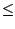
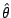

| [Stat Inf II classnotes, ISI, Kolkata] |
In the one problem set up we have a single sample
Z1,...,Znwhere Zi's are independent, but not necessarily identically distributed. Each Zi is a continuous variable. They have a common median θ , which is unknown. We want to test
H0: θ = 0 Vs H1: θ > 0We have already discussed two test procedures for this.
Z(1)Then define the sample median as
... Z(n).
|
 = |
Z(n+1/2) | if n is odd |
| (Z(n/2)+Z(n/2+1))/2 | if n is even. |
Theorem:
Suppose that Z1,...,Zn are iid with some common
continuous distribution. Then show that
is median
unbiased for θ, i.e.,
P( < θ) = P( > θ).In other words, θ is the median of . |
Proof:
We shall only do the proof when n=odd. The n=even case is similar
but notationally more involved. Define
Then Ui's are iid Bern(1/2). The U-vector is distributed uniformly over the set A, which consists of all possible 2n vectors of 0's and 1's.
|
Theorem:
(Bahadur's represenation) Let Z1,...,Zn
be iid with some common continuous density, f. Let θ be its
median. Assume that f(θ) > 0. Let
denote the
sample median based on the sample. Then
= θ + (0.5-Fn(θ))/f(θ) + Rn,for some Rn where sqrt(n)*Rn goes to zero as n goes to infinity.Here Fn denotes the empirical distributin function of the Zi's. |
| Proof: Not to be done in this course. |
| Exercise ONE.2: Use the above theorem to show that sample median has an asymptotic normal distribution. Find out the mean and variance of this normal distribution. |
Once again consider the Wilcoxon's signed rank test. Let us call its test statistic as
T(Z1,...,Zn)Define the function
f(x) = T(Z1-x,...,Zn-x)Note that f(θ) has mean n(n+1)/4. We can interpret this n(n+1)/4 as the ideal value for f(θ). The HL approach suggests estimating θ using HL such that f( HL) is close to n(n+1)/4 as possible.
|
Exercise ONE.3:
Show that f(x) =
#{(Zi+Zj)/2
> x : i
j }.
[Hint: Let hi=|Zi-x|. Define aik = I{|hi|Show that f(x) = i,k aik. Check that {aik+aki = 1} iff {(hi+hk) > 0}] |
| Exercise ONE.4: Show that HL is the median of the above set. |
| Exercise ONE.5: For symmetric distributions HL is claimed to outperform the sample median. Do a simple simulation to check this as follows. Generate 1000 samples each of size 100 from N(0,1). Compute sample median as well as HL for each of the 1000 samples. Estimate bias, variance and MSE, and compare. Also, plot the two histograms. |
(Zi+Zj)/2 for i j,as
A1 ... Am.Then
f(x) = #{j : Aj > x}
| Exercise ONE.6: Show that f(θ) is distribution-free, i.e., the distribution of f(θ) does not depend on the distribution of the Z's (not even on the value of θ). |
So we can find an integer k such that
P(k f(θ) m-k) = 0.95.[Since, f(θ) is a discrete random variable the equality may not be exactly achievable.]
Exercise ONE.7:
Show that for this k we have
P(Ak θ Am-k+1) = 0.95. [Hint: {f(θ) k} iff #{Ai > θ} k. In this case, Am-k+1 is guaranteed to be above θ. ] |
|
Exercise ONE.8:
Apply the HL approach to the sign test to get another estimator of
θ. [Hint: Define f(x) as the sign test statistic computed based on data shifted by x. Then choose so that f( ) is as close to Ef(θ) as possible.] |